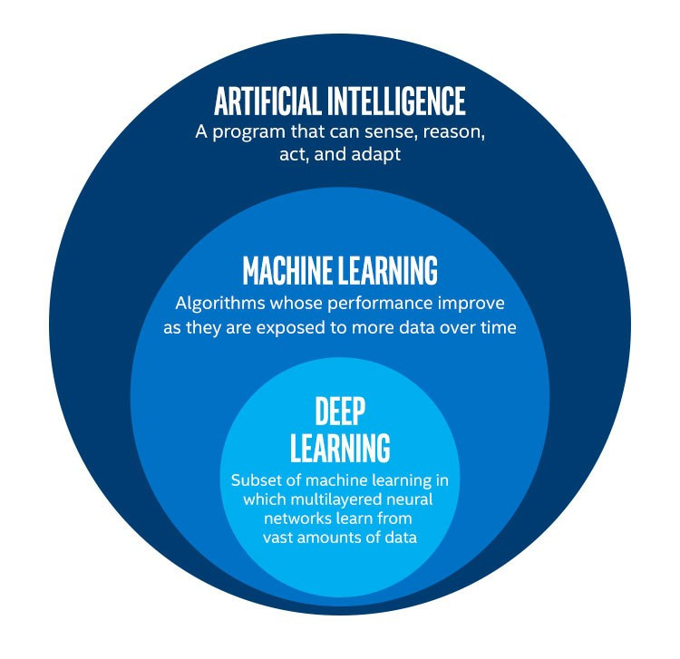

【day10】人工智慧、機器學習、深度學習究竟差異在哪裡?
發布日期: 2022-09-14 00:11:45
原文連結: https://ithelp.ithome.com.tw/articles/10289995
人工智慧、機器學習、深度學習

來源:https://www.logicmonitor.com/blog/troubleshoot-faster-with-anomaly-visualization
在這張圖片我可以知道我們所說的AI其實包含者許許多多的技術，像是機器學習(Machine Learning)就是AI裡面的其中一個分支，在機械學習中深度學習((Deep Learning)又是另一個分支，那麼他們的差異在哪呢?
人工智慧(Artificial Intelligence)
在這邊AI的定義是人製造出來的機器所能表現出來的智慧都能夠稱之為AI，那該怎麼知道程式有沒有智慧呢?在1950年，圖靈提出了一個叫做圖靈測試(Turing test)實驗，這個實驗的內容非常的簡單，如果一個人(A)詢問這個機器人問題，但回答方一個是由真人(B)，另一個則是電腦(C)，並經過多輪的實驗，看A能不能每次都正確判斷B與C，只要A沒辦法分辨出來，那我們就可以說C是一種AI技術。
那撇除掉深度學習與機器學習這裡的AI還有什麼技術呢?在這邊比較有名的就是專家系統(Expert System)，這項技術的核心其實就是資料庫加上推理機(Inference Engine)，通過推理的資料庫中的路線找到最合適的解答。
ex:創建某個疾病的常見回答資料庫，並通過推理找到最合適的答案。
機器學習(Machine Learning)
機器學習是人工智慧的分支之一那麼差別在哪呢?剛剛提到的專家系統需要靠者許多專家建立資料，花費太多人力與時間，而在機器學習的領域中就能改善這項問題，因為機器學習最重要的技術就是讓機器可自主學習。
這裡讓機器學習的方式分成以下4種監督學習（Supervised Learning）、非監督學習（Unsupervised Learning）、半監督學習（Semi-supervised Learning）與強化學習（Reinforcement Learning）。
監督學習（Supervised Learning）
監督式學習的資料集是由輸入資料和人工標註物件出所組成的，通過資料集建立模式（learning model），在觀察完一些先前標記過的訓練範例（輸入資料和人工標註物件出）後，去預測這個模式可能出現的輸入與輸出，在機器學習中常見的有KNN演算法、SVM。
目前這種學習的方式基本用於深度學習的迴歸(Regression)任務與分類(classifier)任務中，像是之前實作的迴歸任務的股票預測，以及分類任務的IMDB影評情感分析、CRIFT10影像辨識、MNIST手寫辨識都是屬於監督學習。
非監督學習（Unsupervised Learning）
非監督學習與監督學習差別在於沒有預期輸出(也就是人工標註的物件)，這種學習方式，會透過演算法將自行尋找出資料的規律，在機器學習中經常會用在把資料分群(clustering)上。
而非監督學習在深度學習中在我們的日常生活中就有很多案例了，例如:IG與抖音上的濾鏡、贏得美術比賽的AI繪圖軟體Midjourney、日本推特上引發熱門議題的仿畫繪圖工具Mimic都是屬於非監督是學習訓練出來的結果。
半監督學習（Semi-supervised Learning）
半監督學習的方式比較特殊，他與監督學習很相似，只差在我們資料的label並不是完整的，例如我們的資料集中只有100筆有標註，但卻有1000筆資料，這種訓練方式就會特過100筆的資訊推測並訓練其他900張圖片的結果最常見的技術就是生成任務。
強化學習（Reinforcement learning）
這種學習方式就與先前的三種不同了，這種學習方式會透過與電腦互動的方式不斷的計算，來達到最終設定的目標，簡單來說就是我每做出一個動作前，電腦就會計算出我的下一步分數是最高的，並且通過動態的方式不斷的改變這些分數，像是幾年前引發議題的AlphaGo就是以這種方式訓練出來的。
深度學習
我們剛剛可以看到在機械學習中講到了許多深度學習的內容，因為深度學習是機械學習的分支，所以機械學習中的概念大多能套用至深度學習，而兩者最大的差異就在於是不是能自動找到特徵與神經網路層。
在深度學習中我們只需要設定好各神經網路參數就能通過訓練自動截取特徵，並且通過不同神經網路的演算法找到一個最佳的結果，但機械學習中我們卻需要自行找到特徵，在把這個特徵放入的單一的演算法當中。
結論
今天看完了這些知識有沒有注意到，深度學習只是在AI這領域的一小部分，且我們在日常生活中也能看到這些模型的應用(車牌辨識、google翻譯、人臉辨識、物件檢測...等)，而且在AI比賽當中有時取得最佳成績的是機器學習的方式，所以我們明天來看一些機器學習的技術吧。